Sugars™ for Windows® uses Visio® diagramming software to provide a full graphical interface for building models of sugar factories and refineries. Models are built using drag-and-drop techniques to draw the flow diagram. Stencils containing shapes of stations are used to draw the flow diagram of the process. Connections are made between shapes using a connector tool with automatic line routing and crossovers. Data for each station and flow stream in the model is entered on windows that are displayed by double clicking on the station shape, or flow stream. Changing a model, after it is built, is done by simply revising the flow diagram and/or modifying the performance data for any station. All of the data for a model is stored in a Microsoft® Access® database that can be addressed by other programs. Heat, material and color balances are quickly obtained from simulations to predict process performance. A revenues window shows the net process revenues to assist with financial decisions.
User Interface
The graphical interface for Sugars makes model building a simple matter of dragging pre-drawn shapes from the Shapes Stencils to the drawing surface. The shapes are designed to represent actual stations in the process. Connections between shapes are drawn using a connection tool that automatically routes connections between associated stations. Data entry windows for controlling the performance of each station are displayed by double clicking on the station shape. Flow stream properties are entered and displayed in a window by double clicking on the flow stream.
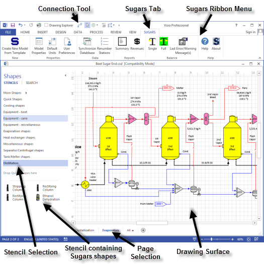
The interface is shown in the figure above when using Visio 2013. Other versions of Visio may appear different. Stencils on the left contain shapes of stations that are used to build a model. Additional stencils may be selected using the “More Shapes” bar. Shapes on a stencil are dragged from the stencil to the drawing surface and dropped in place. Drawing tools are available to design shapes of factory equipment and add them to the stencils as needed. Connections between stations are drawn using a connection tool that features auto routing around shapes and crossovers (line jumps) for crossing connection lines. Drawings can be composed of different layers and pages. Full zoom-in, zoom-out and panning features are provided in the interface.
The selections in the Sugars ribbon menu provided by the SUGARS tab contain icons for:
Create New Model From Template |
- Close the current model then open a blank drawing to start a new model. |
Model Properties |
- Overall properties of the model such as molecular weights for flow stream components, iteration accuracy, maximum number of iterations, color values, atmospheric pressure and default solubility coefficients are set using this window. |
Default Units |
- Units used for all entries and when a model is saved. |
User Preferences |
- Set the increment between station numbers when adding new stations, renumbering stations and adding a group of stations. Select external flow default pressure, and select whether to update all values or only the changed values on the drawing. |
Synchronize Database |
- Check the drawing and database for consistency and make any necessary corrections. |
Renumber Stations |
- Change the station number of one, or more, stations. |
Summary |
- Provide a report listing every flow stream in the model. |
Revenues |
- Provide a report giving the net process revenues. |
Single |
- Balance calculations for a single pass through the model. Used to see how the model changes between balance iterations. |
Full |
- Balance calculations for a full balance of the model. Icon is: Green = model is balanced, Red = model is unbalanced |
Last Error/Warning Message(s) |
- Display error or warning messages from the last balance calculation. |
Help |
- Open the Sugars help system. |
About |
- Display the about Sugars screen. |
…
Clicking the Full icon will give a full iteration balance of the model. If any errors occur during the balance calculations, they will be displayed on an error, or warning, message window. Sometimes revisions to the design of the model, or data controlling the performance of stations in the model, may be needed to bring the model into balance. The Last Error/Warning Message(s) icon will give the message window that can be referenced as corrections are made to the model. Clicking the Single icon will give a single iteration for the model so that changes between iterations can be observed. This can be very helpful to see where a model may be having problems to do a full balance.
The figure below shows the Model Properties window when it is selected from the Sugars ribbon menu.
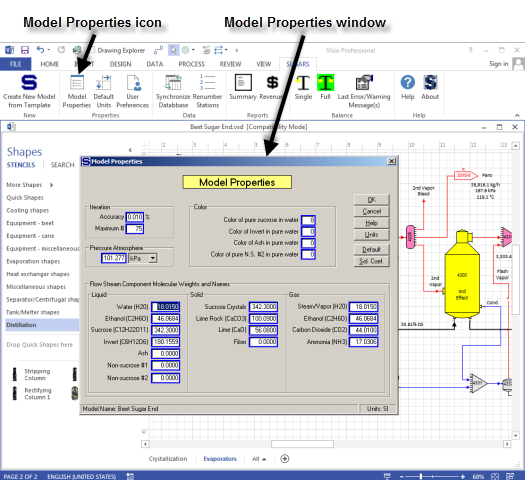
The Model Properties window has entries for molecular weights for most flow stream components, iteration accuracy and maximum number of iterations, atmospheric pressure, color values for pure sucrose in water, invert in water, ash in water and non-sucrose #2 in water. A button on the bottom of the row of buttons is for setting the default solubility coefficients.
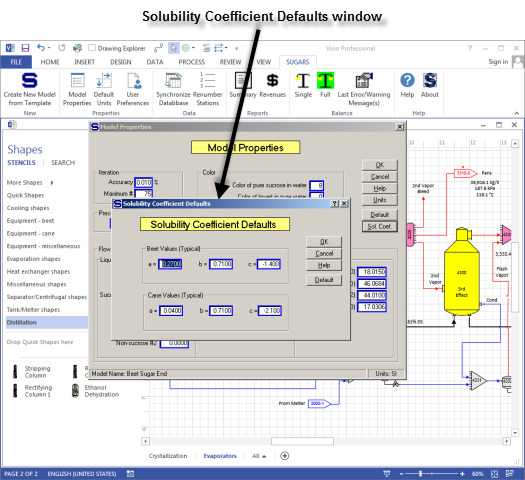
The above figure shows the Solubility Coefficients Defaults window that is used to enter the solubility coefficients that will be displayed on all windows that require solubility coefficients to be entered. Using this window, the default values for solubility coefficients can be set individually for each model; that is, different models can have different default solubility coefficients that are used for entering solubility coefficients on windows that require solubility coefficients to be entered.
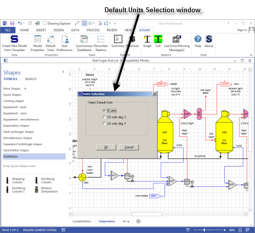
The above figure shows the Defaults Units selection window for selecting the system of units to be used with Sugars for entering data and displaying results from the balance calculations. The default system of units is used when a model is saved, even if the displayed units are different. Units are available for systems in SI, US with temperature in °C and US with temperature in °F.
Also shown on the figure above, the stencils on the left contain shapes of stations that can be used to build a model. Each of the station types in Sugars is represented on the stencils and many of the stations have more than one shape that can be used to represent the same type of station. Other unique shapes can be drawn and added to the stencils, if needed. There is no limit to the number of different shapes that can be used to represent the Sugars station types. See Designing Your Own Shapes for further information.
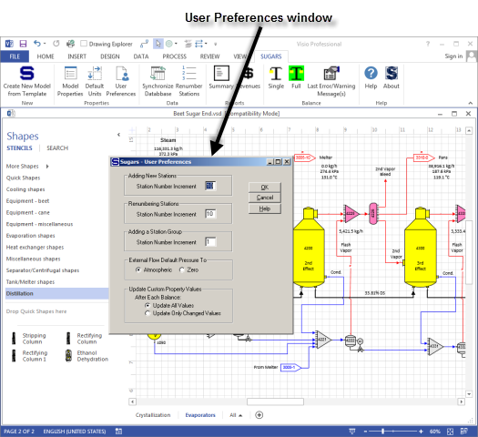
The above figure shows the User Preferences window. Entries on this window will change the station number increment as new stations are added to a model, the station increment when stations are renumbered and the station increment for stations in a group. Also, it controls whether the atmospheric pressure or 0.0 is used when new external flows are added to a model. User Preferences are set for the computer being used; hence, the preferences will apply to all models that are built and modified on the same computer.
Consistency between the drawing and the Sugars database that contains all of the data for a model can be checked at any time by using the Synchronize Database option. When this option is selected, Sugars will examine each object on the drawing (stations and connecting flow streams) and verify that the database has corresponding entries. If it finds any errors or differences it will try to fix them and display a message that says errors were found. The drawing always controls the entries in the database. That is, if a station or flow is in the database but not on the drawing, then the entry in the database will be deleted. And, if the drawing has a station or flow that is not in the database, then a corresponding entry will be made in the database.
Stations can be renumbered at any time by selecting either one individual station or a group of stations and then selecting the Renumber Stations option. The increment between each station that is renumbered (if more than one is being renumbered) is controlled by the User Preferences window shown above.
The Summary icon gives the Summary report that can be displayed and printed out. The figure below shows the Summary report which lists every flow stream in the model. External flows are listed first with internal flows between stations listed next. The Revenues icon gives the Net Process Revenues report shown below where a value can be entered for every flow stream that leaves the model and a cost can be entered for every external flow into the model. The difference between the revenues and the costs give the net process revenues for the model.
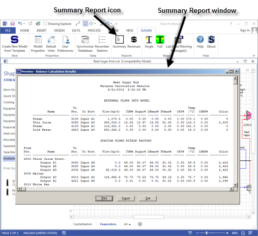
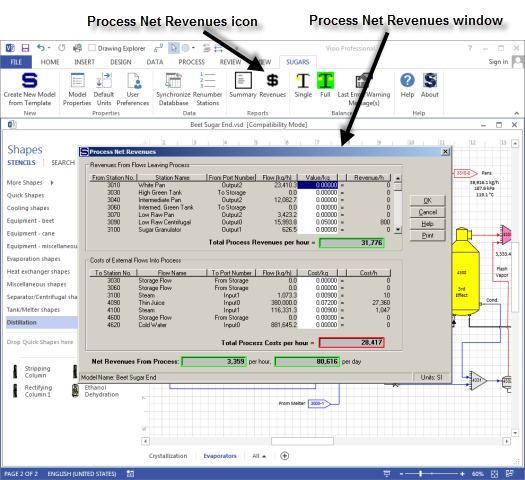
Complete help systems are available from the main menu for both Visio and Sugars (see figure below). Visio Help describes all of the drawing features available in Visio and Sugars Help describes each of the stations, input properties, examples and features of each station. Also, the Sugars help system describes how to design shapes so that they will work with Sugars (see Designing Your Own Shapes) and other features of the program.
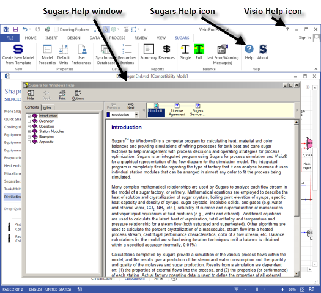
Input and output connections for shapes stay glued to the shapes even when the shapes are moved, or the flow streams are rerouted. Stations can be copied from one part of the flow diagram and pasted into another part with the data for the station repeated in the copied station. Also, groups of stations may be combined and placed on the drawing as a group instead of having to add each station individually (station numbers for each station are entered when the group is dropped on the drawing). See Grouping Shapes for further information.
Model Building
Every model of a factory, refinery, or portion of a process is built by selecting stations from the available station modules in Sugars and connecting the stations together using flow streams. Flow streams between stations, and flow streams that leave a model, are called internal flows. Flow streams that go into the model from outside sources (e.g., beets, steam, water, CaO, etc.) are called external flows. All external flows must be fully specified before a balance can be done. Internal flows are calculated by Sugars during the balance calculations. When a shape is dragged from a stencil to the drawing surface, a window appears to assign a number to the station (see figure below).
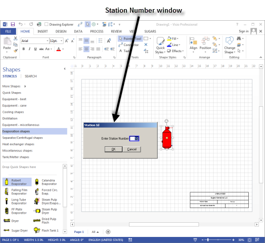
The Station Number for each station in a model must be unique. Sugars will automatically index the station numbers by 10 (or as set in User Preferences) as each new one is added to the flow diagram; however, the number may be changed on the window to any unused number in the model.
Each Sugars station type has a data input window that is associated with the shapes for that type of station. The data input window defines the properties of each station (or object) in a model. Drawing the process flow diagram defines the model. The output flows emitted from a station are a result of the properties of the station. Changing the properties of a station will control how the station processes flows coming into the station. For example, an evaporator station, with juice and steam inputs, will process the juice flow to evaporate water while using steam, or vapor, to boil the juice. Thus, the properties of the stations in a model and the characteristics of the external flows into the model control all of the internal flows between stations, and the flows leaving the model. Each station type has a properties window for entering the appropriate data, and a window is provided for entering the data to define external flows into the model.
Shapes on the stencils are associated with their respective Sugars station modules by naming the shape in Visio with a Sugars station name and identifying the input and output ports for the station. See Designing Your Own Shapes for further information.
The shape color turns to blue after the station number is entered. Double click the shape with the left mouse button to get the data entry window for the station (see the Evaporator Properties window in the figure below).
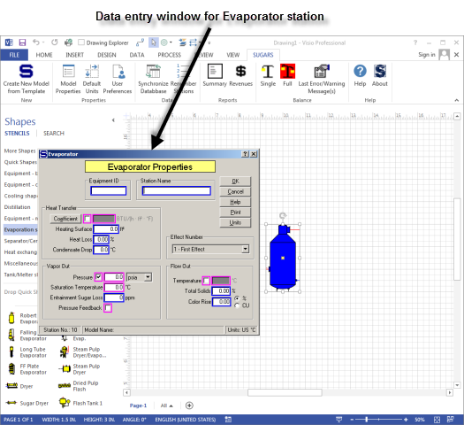
All of the necessary data to describe the performance of the station is entered on the Properties window. The station turns yellow to indicate that data for the station was entered after clicking on the OK button to close the Evaporator Properties window. Shapes are added to the drawing until all of the stations for the model are on the drawing and data is entered for each station until all of the stations in the model have turned to yellow.
Connections are made between input and output ports on each station using the connection tool until all of the ports on the stations have connecting flows. Some stations, such as melters, tanks and receivers, do not need to have all of their ports connected (extra ports are provided), but these stations must have at least one input and one output flow.
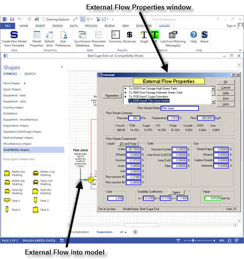
Data for external flows into the model is entered on the External Flow Properties window (see above). Double clicking on the external flow or right clicking and selecting "Sugars properties" from the drop-down menu gives the External Flows Properties window (see figure above). Every external flow stream going into the model must be specified with pressure, temperature and flow stream components. If the flow stream contains dissolved non-sucrose components, the solubility coefficients must be defined. And, if the flow is not a required flow, the quantity of the flow stream must be specified. Required flows are flows that have their quantity determined by the properties of a station. For example, the vapor flow into a pan is a required flow because the quantity of the vapor needed by the pan is determined by the properties of the pan and the syrup flow into the pan. A flow stream color entry must be made for the external flow if the color balance is being done. And, a currency value for the flow stream can be entered if the net process revenues are being calculated for the model. Successful model building with Sugars requires organization and careful layout of the factory’s stations and flow streams. Poorly designed models do not balance well and they are unstable when changes or revisions are made at a later time. Also, good drawing methods can make it much easier to follow the process flows.
Simulation
The model is ready for balancing once the data for every station and every external flow stream is entered. The balance calculations give a simulation of the process and provide all of the details of the internal flow streams in the model.
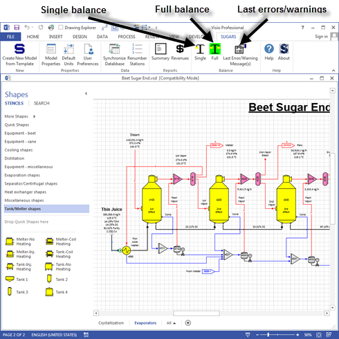
Clicking on the Full balance icon will initiate the balance calculations and give a small window showing the progress of the iterations. Clicking on the Single balance icon will give one-balance iteration to observe the progress of the balance. An error message window will appear if any errors are detected during the iterations. Fatal errors have to be corrected before the calculations can be completed. Sometimes warning or informative messages appear giving information about the calculations, or observations about the model. Many of these messages do not require any action by the user, but are merely displayed as information that might be important, or helpful to the user. The error/warning message window may be recalled at any time after the balance calculations are done so that it can be referred to as corrections are made to remove any errors that occurred during the balance calculations. Clicking on the Last Error/Warning Message(s) icon will recall the display of the last error messages that occurred during a balance.
Results
The results of the calculations can be displayed after the balance calculations are completed. Sugars provides several different presentations of the results.
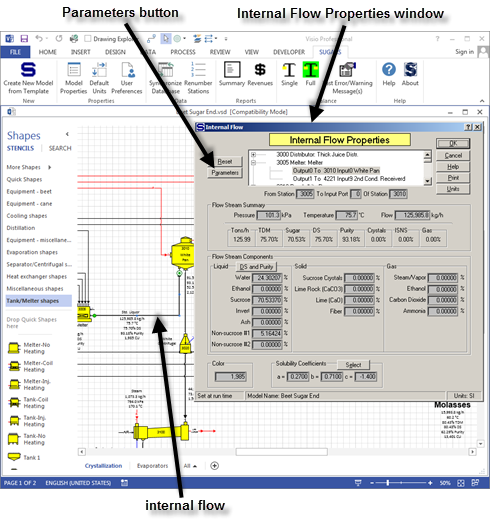
The figure above shows the display of the Internal Flow Properties window after a balance. This window shows all of the details of the internal flow, such as pressure, temperature, flow quantity, components, color and solubility coefficients. In addition, the % total dry matter (TDM), % sugar, % dry substance (DS), % purity, % crystals, % insoluble solid non-sugars (ISNS) and % gas are given in the middle of the window with the quantity of flow in tons per hour. Clicking the DS and Purity button, under the Flow Stream Components in the Liquid phase section, will give the % dry substance and purity for the liquid portion of the flow. For a massecuite, this would be the mother liquor %DS and % Purity.
Clicking the Parameters button on the Internal Flow Properties window gives additional characteristics of the flow, such as: volume flow, specific weight, enthalpy, specific heat capacity, supersaturation and boiling point elevation (see figure below). Place the cursor on the “Volume flow” “Liquid” displayed value to see the liquid portion of the flow displayed as liters per minute (lpm) or gallons per minute (gpm) depending on the units (SI or US) being used. The Flow Stream Parameters feature is also available for external flows.
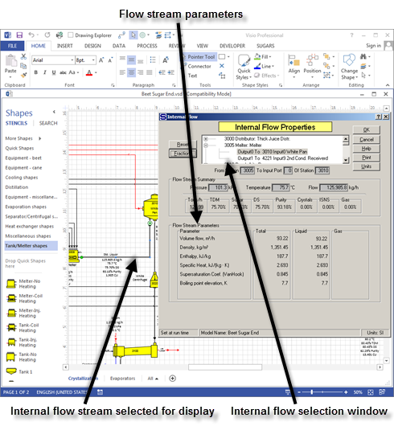
Every internal flow in the model can be displayed using the Properties window. Also, flow streams that are required and/or pressure feedback (flow streams that need a pressure value from another station) are identified on the flow diagram by a small 'R' for required and a small 'P' for pressure feedback. Sugars will place these indicators on the flow streams after the balance calculations are completed.
The Internal Flow Properties window has a small internal flow scroll able selection window that shows every internal flow stream in the model. Using this window, individual flow streams can be displayed quickly without having to close the Internal Flow Properties window and double click on another flow stream to display its properties. The External Flow Properties window also has a similar external flow selection window for viewing external flows. The internal and external flow properties windows provide valuable information about the process that can be used for engineering design and/or data reconciliation.
Some external and internal flow data and parameters can be displayed on the drawing obviating the need to open the properties windows. Right click the flow stream and from the drop-down menu that appears, select "Add Flow Legend..." (see figure below).
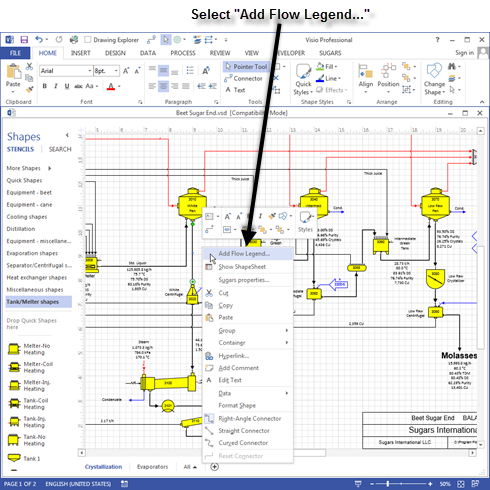
Select the data to be displayed when the flow legend menu appears (see figure below).
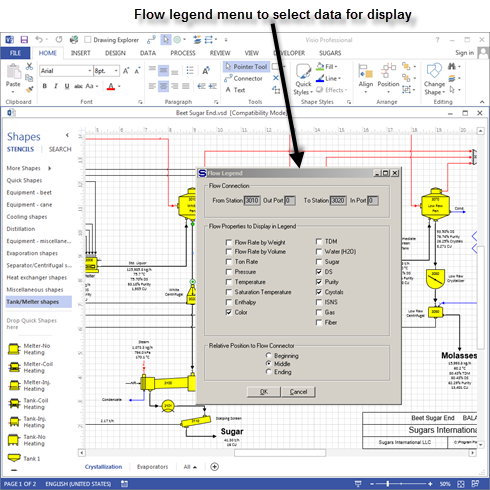
The displayed data can be positioned and formatted using the normal Visio methods and it will be updated by Sugars after each balance (see figure below).
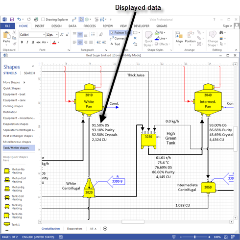
Data can also be displayed on the drawing using Visio Shape Data. Every station and flow stream has Shape
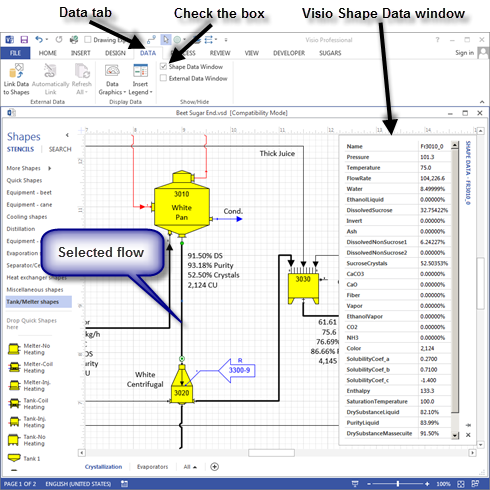
Data associated with it. The Shape Data is stored in the Visio ShapeSheet and it can be displayed in the Visio Shape Data window. Click the DATA tab and then check the “Shape Data Windows” check box to have Visio display the Shape Data in a collapsible window (see figure above). The Shape Data can be displayed on the drawing and/or used in calculations using the Visio INSERT > Field feature (see Shape Data Display).
In addition, Shape Data can be exported to either an embedded or external Microsoft Excel spreadsheet. Visual Basic for Applications (VBA) is used to make the connection between the Shape Data and Excel (see Exporting Data to Excel).
Printouts are available for the Summary and Revenues reports. These reports provide an overview of the balance calculations. The Summary report (see figure below) shows every flow stream in the model with the characteristics of each flow listed along with the station the flow originates from and the station to which it goes. The flow quantity, TDM% (total dry matter percent), Sugar% (sugar percent), DSmas% (percent dry substance including sucrose crystals – if any), PUmas% (percent purity including sucrose crystal - if any), CRY% (percent sucrose crystals), Temp (temperature in °C or °F), ISNS% (percent insoluble solids non-sucrose), and color is printed for each flow stream. The Summary report is a listing of the same summary information that is on the Internal Flow Properties and External Flow Properties windows for each flow.
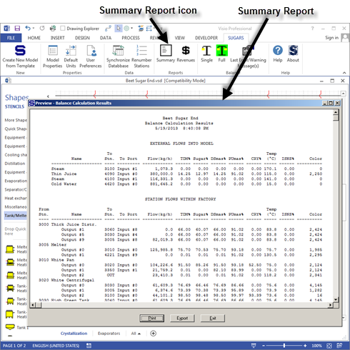
The Revenues report (see figure below) is a report of the process net revenues that are generated by the model. The process net revenues are calculated from the revenue values for all flows leaving the model (internal flow) minus the cost of all flows into the model (external flows). As changes are made to the process, the net revenues will either increase, or decrease. New process equipment with new station properties, or changes in the process routing, can be evaluated quickly to see now the revenues will change. This information is very useful for making investment decisions. Also, it is the most convenient way to show how changes to the model will affect the financial operating performance of the process.
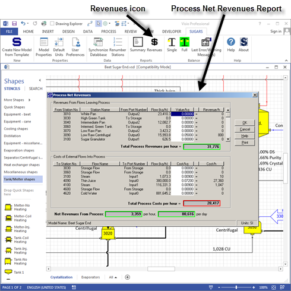
The revenues and costs value entries for all external flows into the model and internal flows that leave the model are entered on the External Flow Properties and Internal Flow Properties windows. These values are used to calculate the process net revenues. The entered values also can be changed on the Process Net Revenues window as shown in the figure above.
Data Import/Export
Data Import/Export is an optional feature of Sugars that can be added to the Sugars license. It allows importing data directly into an opened model from an external eXtensible Markup Language (XML) file. Also, data can be exported from the model to an XML file that can then be read by other programs. This allows changes to be made to the model that can then be exported to other software that can process the file for either reports or to use as set points for the factory.
Every station in a model has an Equipment ID entry field and a unique ID must be entered for every station that is importing or exporting data. A schema file is used to define the format for the XML file and data is keyed to the Equipment ID’s for each station. The data import/export feature uses these Equipment ID’s to place the data from the XML file into the proper station. Station and external and internal flow data can be imported as defined in the “AMS Import PropertiesRev_.pdf” document in the …Sugars\AMS subdirectory. External flow data in an XML file is aligned with the station that it goes to by the Equipment ID and the input port number for the station. Internal flow data is aligned with the flow that leaves a station and port number.
The figure above shows the data Import/Export icon as it appears if this feature is licensed for the copy of Sugars being used. Clicking the left mouse button on the Import/Export icon will give the Data Import/Export window shown below.